建筑、道路与漫画层次。
同一份国贸数据，继续打磨通用引擎。v0.3 → v0.4：窗框与窗格对齐、玻璃有连续亮区、树冠连续过渡、地面区分白纸与落影，补足桥梁结构与步行铺装。
4类建筑、12种确定性窗格语法。修复输入顺序截断窗框的问题，附近墙面按距离获得实体细节。
玻璃增加示意天空反光；地面主要在投影与接触处上网点。复用现有渲染通道。
共同基础冠加外围叶簇，所有通道共用连续变化的几何。保留2,473个树位，近簇面数降低。
同机位滑动对照
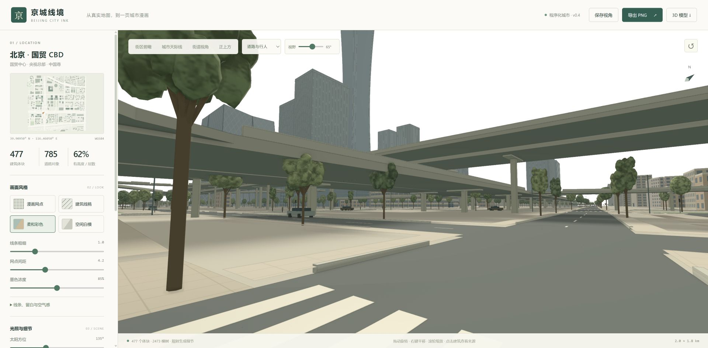
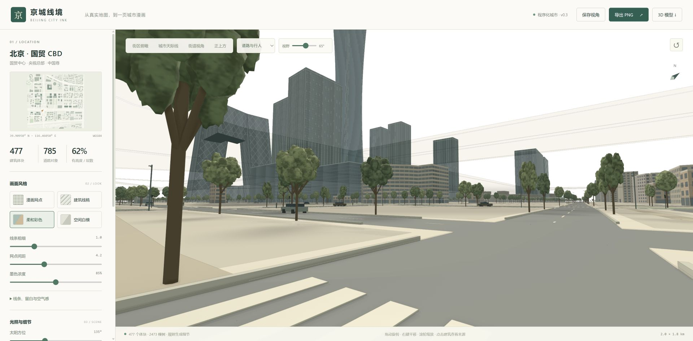
v0.3 优化前v0.4 优化后

原11组旧版图复用上一轮已归档的v0.3截图，新增4组道路机位重新拍摄两版；共15组，同相机、共有参数与画幅逐项核对。新增玻璃留白默认65%，两版远窗保留均为50%。原版只用于同地段风格参考，未与它做像素配准。
逐项复评 68.5 → 71.8 / 100
沿用R1–R7权重。这是人工工程量表，不是实景还原率；功能完成不自动换成视觉加分。
| 需求 | v0.3 | v0.4 | 截图判断与剩余差距 |
|---|---|---|---|
| R1 · 地标形体 | 7 | 7 | 中国尊与央视形体沿用原规则，没有新增实测曲面，不加分。 |
| R2 · 立面类型 | 6.5 | 7 | 03/04/09：共享开间与12种稳定窗格语法，玻璃有连续示意亮区。临街语义、首层和屋顶用途化仍不足。 |
| R3 · 实体细节 | 6 | 6.5 | 03/09：实体窗台与玻璃对齐，修复输入顺序截断后，近立面机位真正生成5718个窗框实例。共墙避让和凹窗仍待做。 |
| R4 · 道路与街道 | 7 | 7.5 | 12–15：桥板侧底、护栏、232根避障支撑可见；人行面升高、过街面平齐、路缘开口和近铺装成立。78处名义高度不一致连接、天桥上下通道及过街缓坡仍未完成。 |
| R5 · 树冠与植被 | 6.5 | 6.5 | 03/04/09：修正中景叶簇埋入基础冠的回退；LOD连续且预算下降。静态叶缘和整冠黑白组织仍未明显接近原版，视觉分不加。 |
| R6 · 漫画渲染 | 7 | 7.5 | 09/11、阴影消融：玻璃明暗不再整片统一，无影地面留白、真实落影保留网点。03街道在楼影中，网点变深，不能概括为所有地面变白；细竖肋断续仍存在。 |
| R7 · 复现与真实性 | 9 | 9 | 15组固定机位与共有参数/画幅核对、四模式及参数保存验证。无原版精确外参、无GPU帧率基准，保持原分。 |
道路专项：从平片到结构
车道与明确过街面保持0.32米，普通人行面抬到0.47米；材质和近景铺装接缝分别处理。桥上、禁步行道路不再机械铺两侧人行道。149段路缘按横道位置裁开，斑马线贴近路面。
桥梁补有厚度的桥板与桥底、3,001段护栏、232根避让下层道路的支撑。74个不安全支撑候选跳过。桥高仍按layer×7米推断，78处名义高程连接、天桥楼梯和过街缓坡仍需解决。
独立子代理：与原版还差在哪里
逐图复核原版存档和v0.3，核实作者公开说明，再对完成的v0.4截图复评。观察事实、代码诊断与实现推测分别记录。
| 重点 | 本轮覆盖 | 下一步应验收什么 |
|---|---|---|
| 白地、网点与落影 | 本轮覆盖核心分离 | 进一步区分墙面朝光与投影；保持亮地留白。 |
| 立面与实体细节 | 共享布局、近框覆盖、玻璃层次 | 临街/共墙识别、首层与冠部、用途化屋顶。 |
| 树冠与叶缘 | 连续LOD与预算，修正叶簇被遮挡 | 整冠明暗分组、细叶缘疏密；不靠继续堆面数。 |
| 主轮廓与细竖肋 | 仍有断续条码 | 按屏幕尺寸分别处理细构件和主体轮廓。 |
| 近处接地阴影 | 现有阴影域精度未提升 | 近域/多域阴影，保留远处楼影并避免游动。 |
| 临街与步行空间 | 步道/车道分层、铺装与路缘开口 | 入口可达性、降缘缓坡、共墙和设施净空。 |
| 桥梁垂直关系 | 桥板、护栏与避障支撑 | 78处名义高程连接、桥头坡道、天桥上下通道。 |
| 场景深度与彩色层次 | 保持现有范围与风格 | 地形和远城另行评估，不用虚构山体掩盖边界。 |
原版街景参考（2026-10-29，同地段、不同机位）
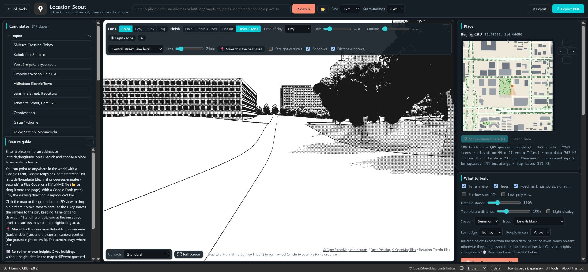
仅作研究证据，不参与本项目建模或渲染。
验收与开销
- 49项完整自动测试通过；最后斑马线厚度修正另复跑8项街道测试，生产构建通过。Three.js仍有超过500kB分包提示。
- 15组1920×945版本对照，共30张；逐项匹配相机和共有参数。已重拍早期捕获的加载帧，并对全部图像检查尺寸、非空画面及联系表。
- 玻璃留白默认65%；设置100%并保存视角后重载，实际控件与输出恢复100%。
- 漫画、彩色、线稿、白模及投影开关实际检查；PNG实际导出检查另附。本轮未重新验证GLB外部导入。
- 道路平面38884对候选面的独立重叠检查通过。全部232根桥墩逐一检查下层道路净空；74个不安全候选跳过。
- 149段路缘为横道留出开口，合计约326.6m；这不是无障碍坡道的完整建模。新增桥结构约110156三角形、3个合并网格，不新增全场景渲染通道。
- 近树叶簇500→320三角面，最多96棵详细树，树冠上限1339860→998100。全部2473树位保持。几何内存与场景预算详见下表；无GPU帧率结论。
| 机位 | 旧版总三角形 | 新版总三角形 | 实体近窗实例 |
|---|---|---|---|
| 01-overview-ink | 828,233 | 922,676 | 0 → 0 |
| 03-street-ink | 1,356,425 | 1,390,100 | 0 → 3,878 |
| 09-facade | 1,064,033 | 1,186,916 | 0 → 5,718 |
| 11-crossing | 1,141,337 | 1,222,748 | 4,084 → 6,234 |
几何数为视锥裁剪前、单场景遍次的总量；不含阴影与后处理，不是GPU帧率。共享布局增加顶点属性内存，近窗修复也增加局部几何。完整记录见预算JSON。
窗格、反光、枝叶仍为程序示意。共墙与临街入口、树叶疏密、近区高精度阴影、细竖肋混叠和地形仍有缺口。桥板/护栏/支撑已补，但仍有78处名义高程不一致的连接点，天桥楼梯与过街缓坡未补齐。路缘开口不等于完成无障碍坡道。本轮没有扩展地图、增加地标专用规则或宣称照片级还原。
专项检查

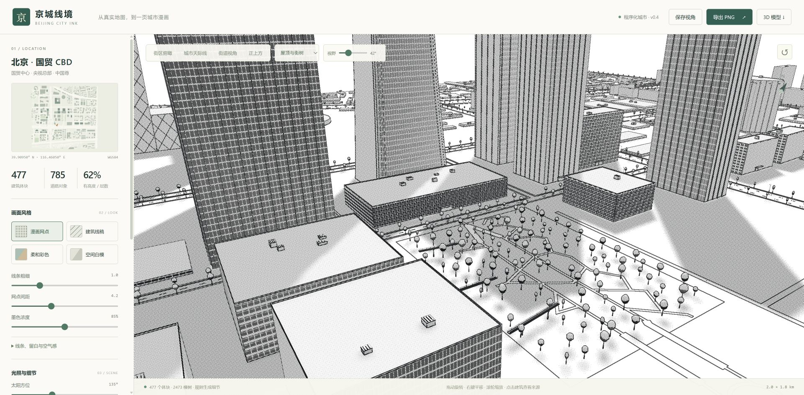
投影开启
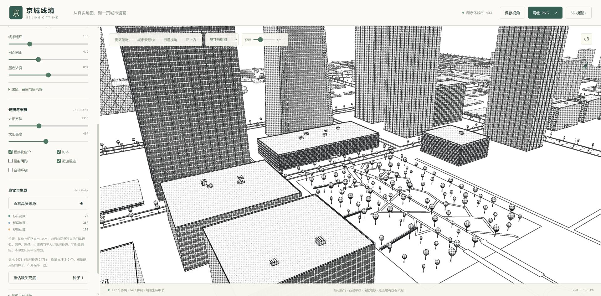
同机位关闭投影
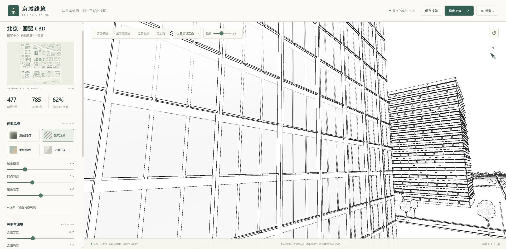
线稿模式
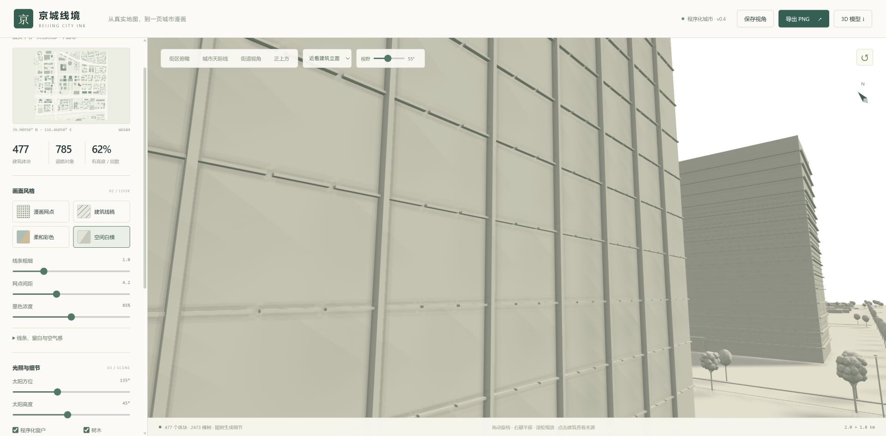
白模模式
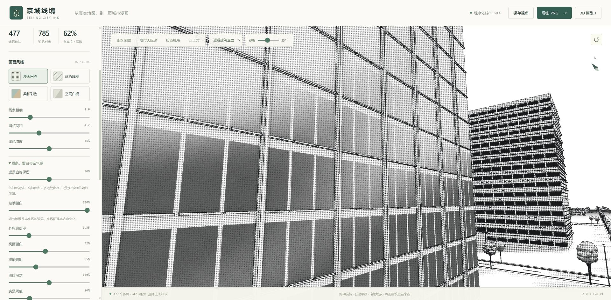
玻璃参数保存与重载
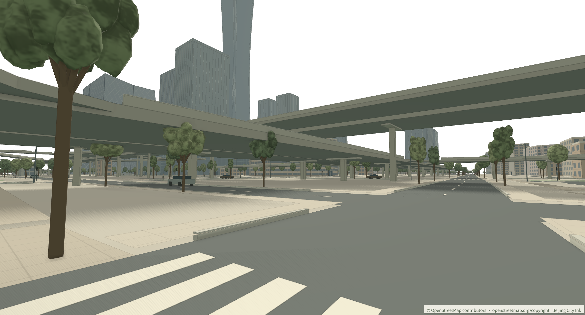
PNG实际导出全部新版截图

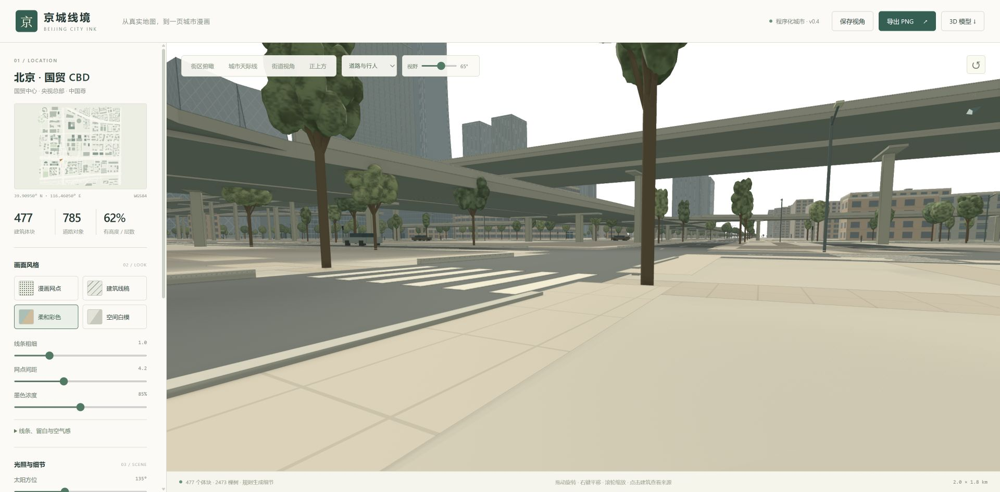
路缘与铺装
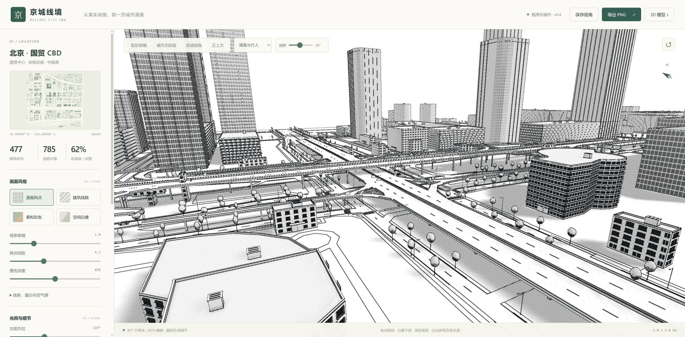
立交俯视
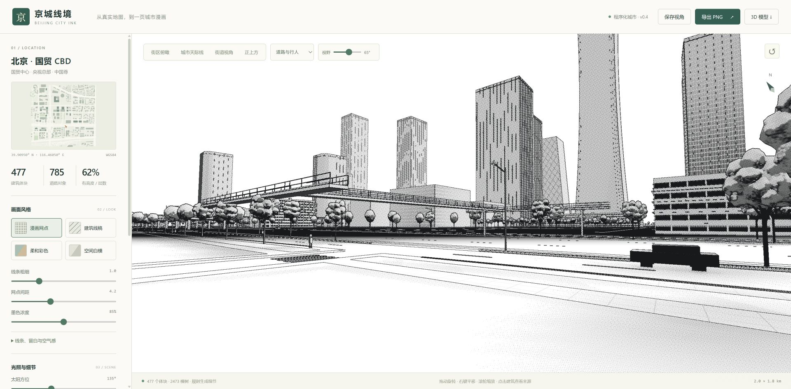
行人天桥
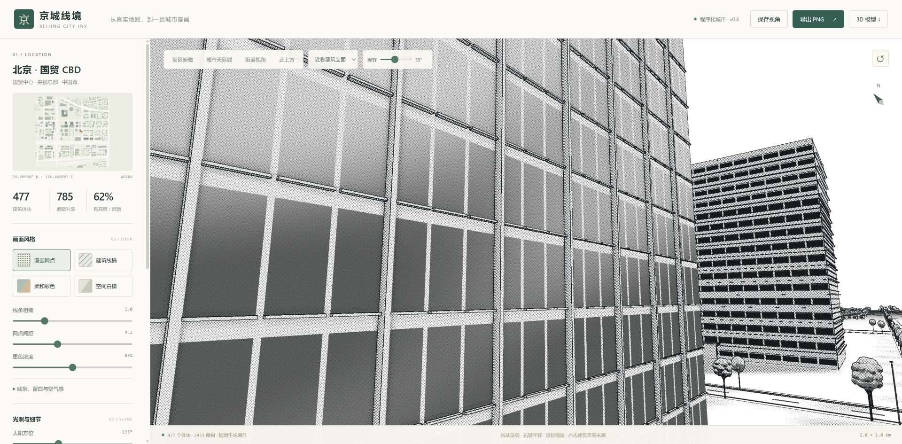
近看立面
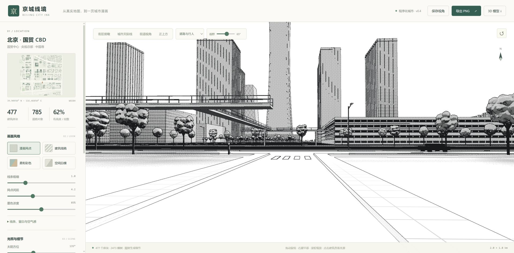
路口留白
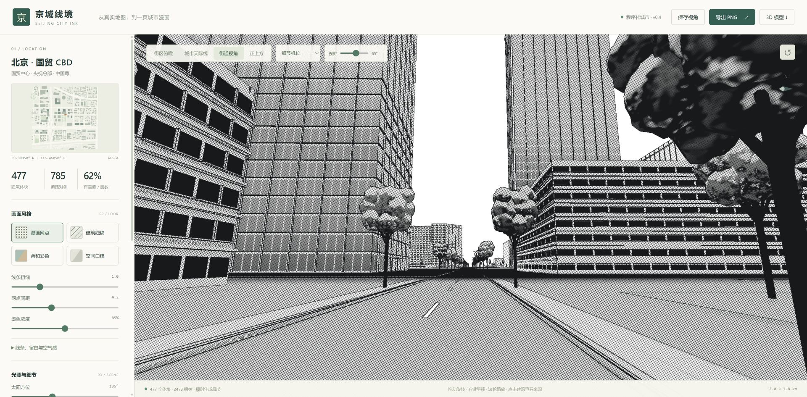
街道漫画
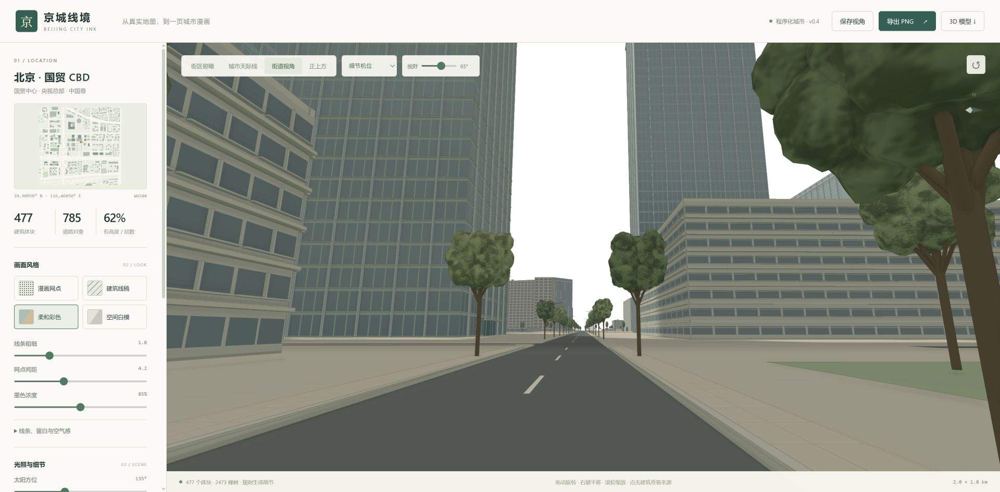
街道彩色 屋顶与街树
屋顶与街树
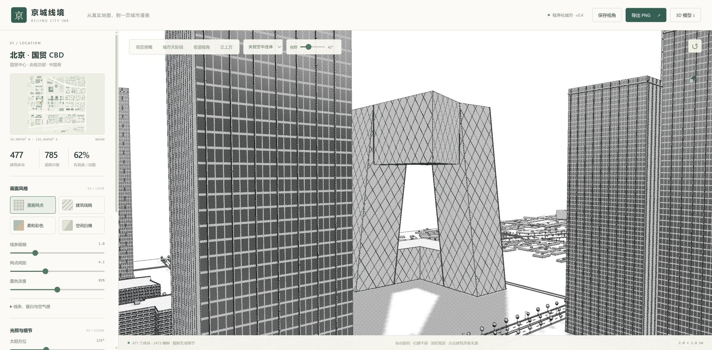
央视总部
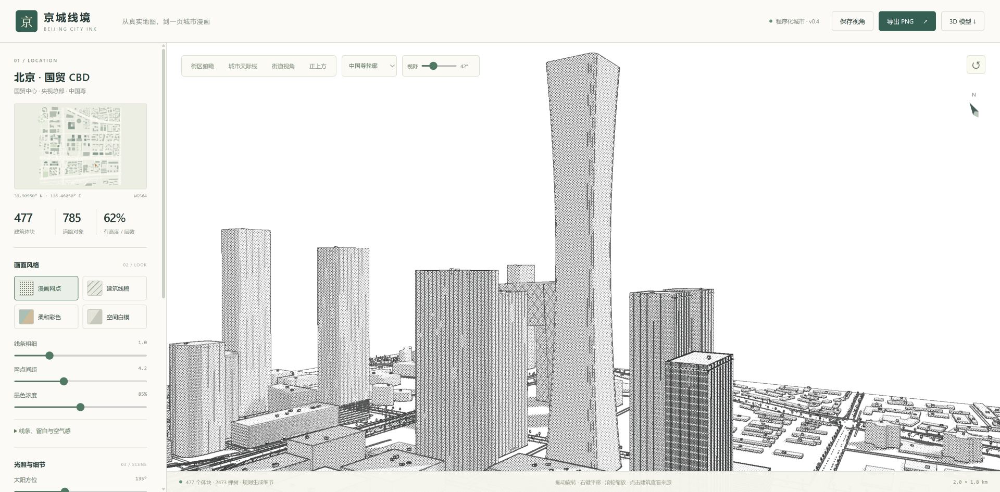
中国尊
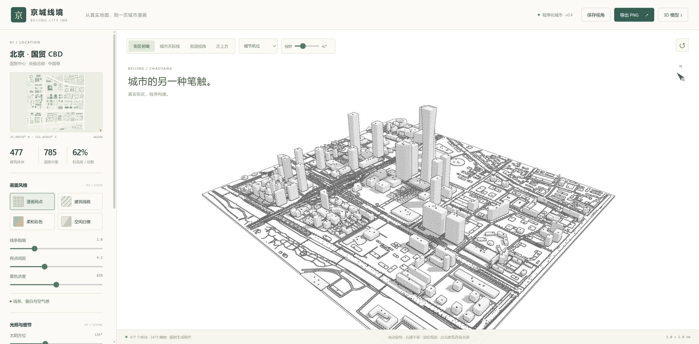
街区俯瞰
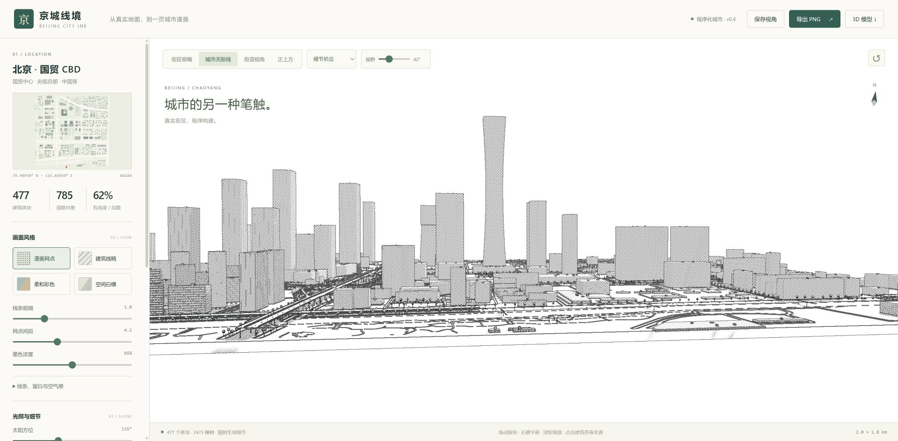
城市天际线
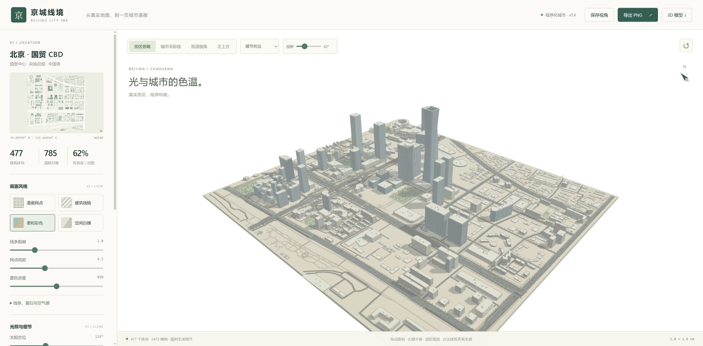
俯瞰彩色
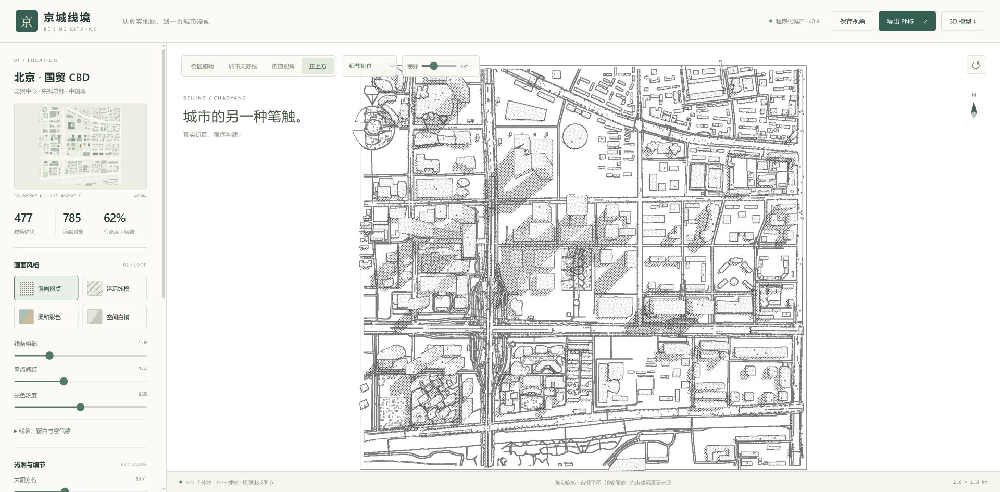
正上方本轮Git提交记录
0300485docs: define v0.4 engine detail acceptance5a96db5feat(facades): share pane layouts with solid frames and vary building grammars5a8f3a7feat(ink): separate ground paper from cast shadow tone21e4618docs: audit remaining visual gaps against reference62e8725feat(glazing): add directional sky reflection and controlled ink highlights179a7abv0.4: blend tree LOD through shared canopy geometry0d0cc16feat(ui): expose reproducible glazing highlights in v0.4f927ae1fix(facades): generate nearby frames by distance instead of extract order6c70fd1chore(qa): compare v0.4 geometry budgets with frozen v0.35576453Fix hidden mid-distance canopy lobes during LOD morph90dd28afeat(ink): distinguish pedestrian paving from carriageways2f39bb6feat(roads): separate raised sidewalks from asphalt and constrain inferred pavingcaf5e25fix(roads): keep observed crossing approaches flush through sidewalks5766ac1fix(streets): open kerbs at pedestrian crossings8a9ae14feat(bridges): add deck thickness guards and clearance-checked piersf653eb0fix(bridges): leave clear openings at same-level bridge branchesec70715fix(streets): keep zebra paint close to the road surface02749e2docs: record independent v0.4 visual acceptance